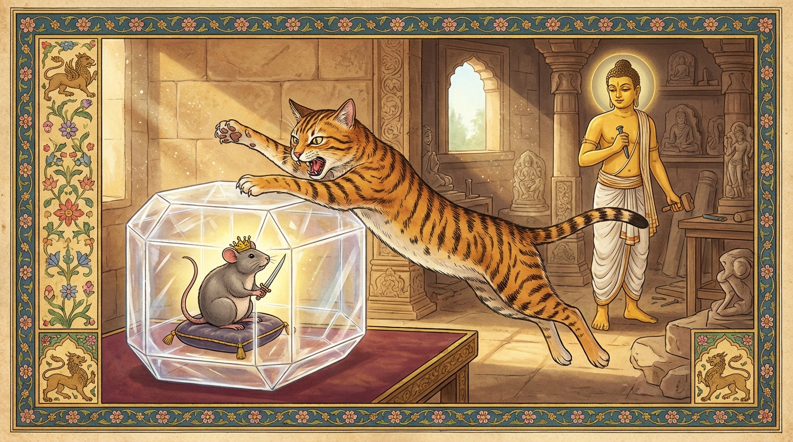

7. බබ්බු ජාතකය (137)
“යත්ථෙකො ලභතෙ බබ්බූ” යන මේ ජාතකය ශාස්තෘන් වහන්සේ ජේතවනාරාමයේ වැඩවසන සමයෙහි කාණමාතා සික්ඛාපදය (පාචිත්තිය 230 ආදිය) අරභයා දේශනා කළ සේක. සැවැත් නුවර ‘කාණමාතා’ (කාණාගේ මව) නමින් දියණිය නිසා ප්රකට නාමයක් ඇති උපාසිකාවක් වූවාය. ඇය සෝවාන් ඵලයට පත් ආර්ය ශ්රාවිකාවකි. ඇය ‘කාණා’ නම් තම දියණිය වෙනත් ගමක සමාන කුලයක පුරුෂයෙකුට විවාහ කර දුන්නාය. කාණා කිසියම් කටයුත්තක් සඳහා මවගේ නිවසට පැමිණියාය. ඉන්පසු ඇගේ ස්වාමියා දින කිහිපයකට පසුව “කාණා පැමිණේවා, මම කාණාගේ පැමිණීම කැමැත්තෙමි” යැයි දූතයෙකු යැවීය. කාණා දූතයාගේ වචනය අසා “අම්මේ, මම යන්නෙමි” යැයි මවගෙන් අවසර ඉල්ලුවාය. කාණමාතාව “මෙපමණ කලක් මෙහි සිට හිස් අතින් යන්නේ කෙසේද?” යැයි පවසා ඇගේ ගමන සඳහා කැවුම් පිසුවාය. එකෙණෙහිම පිණ්ඩපාතික භික්ෂුවක් ඇගේ නිවසට වැඩියේය. උපාසිකාව උන්වහන්සේව වඩා හිඳුවා පාත්රය පුරවා කැවුම් පූජා කළාය. එම භික්ෂුව පිටතට ගොස් වෙනත් භික්ෂුවකට ඒ බව කීවේය. උපාසිකාව උන්වහන්සේට ද එලෙසම දුන්නාය. උන්වහන්සේ ද ගොස් අනෙකෙකුට කීවේය. උන්වහන්සේට ද එලෙසම දුන්නාය. මෙසේ භික්ෂූන් හතර දෙනෙකුට කැවුම් පූජා කළාය. මේ හේතුවෙන් ගමන සඳහා පිළියෙල කළ කැවුම් අවසන් විය. කාණාට යාමට නොහැකි විය. පසුව ඇගේ ස්වාමියා දෙවන වරටත්, තෙවන වරටත් දූතයන් යැවීය. තෙවන වර දූතයා යවන විට “ඉදින් කාණා නොඑන්නේ නම්, මම වෙනත් බිරිඳක් ගෙන එන්නෙමි” යැයි කියා යැවීය. එම වාර තුනේම ඉහත ක්රමයටම (කැවුම් භික්ෂූන් වහන්සේලාට පූජා කිරීම නිසා) ඇයට යාමට නොහැකි විය. කාණාගේ ස්වාමියා වෙනත් බිරිඳක් ගෙන ආවේය. කාණා ඒ පුවත අසා හඬමින් සිටියාය.
බුදුරජාණන් වහන්සේ මේ කරුණ දැන පෙරවරු කාලයෙහි සිවුරු හැඳ පොරවා පාත්රය ද ගෙන කාණමාතාවගේ නිවසට වැඩමවා, පැනවූ අසුනෙහි වැඩහිඳ කාණමාතාවගෙන් “කාණා හඬන්නේ කුමක් නිසාදැ”යි විමසූහ. “ස්වාමීනි, අසවල් කාරණය නිසාය” යැයි අසා, කාණමාතාව සනසා ධර්ම කථාවක් දේශනා කොට ආසනයෙන් නැගිට විහාරයට වැඩම කළහ. ඉක්බිති ඒ භික්ෂූන් හතර දෙනා තුන් වරක්ම ගමන සඳහා සකස් කළ කැවුම් පිළිගෙන කාණාගේ ගමනට බාධා කළ බව භික්ෂු සංඝයා අතර ප්රකට විය. එක් දිනක් භික්ෂූන් වහන්සේලා දම්සභා මණ්ඩපයේදී කථාවක් පටන් ගත්හ: “ඇවැත්නි, භික්ෂූන් හතර දෙනෙකු තුන් වරක්ම කාණමාතාවගේ පිසූ කැවුම් අනුභව කොට කාණාගේ ගමනට අන්තරාය කිරීම නිසා, ස්වාමියා විසින් අත්හැර දැමූ දියණිය නිසා මහා උපාසිකාවට දොම්නසක් ඇති කළහ.” ශාස්තෘන් වහන්සේ වැඩමවා “මහණෙනි, දැන් කවර කථාවකින් යුතුව සිටියහුදැ”යි විමසා, “මේ කථාවෙනැ”යි කී කල්හි, “මහණෙනි, දැන් පමණක් නොව පෙරත් ඒ භික්ෂූන් හතර දෙනා කාණමාතාවට අයත් දේ අනුභව කොට ඇයට දොම්නස් ඇති කළාහුය” යැයි වදාරා අතීත කථාව ගෙනහැර දැක්වූ සේක.
අතීතයේ බරණැස් නුවර බ්රහ්මදත්ත රජු රාජ්යය කරන සමයේ බෝධිසත්වයෝ ගල් වඩුවෙකුගේ කුලයක උපත ලබා, වැඩිවිය පැමිණ, මැනවින් ශිල්ප ඉගෙන ගත්හ. එකල කාසීරට එක් නියම් ගමක මහා ධනවත් සිටුවරයෙක් විය. ඔහුට නිදන්ගත කරන ලද රන් කෝටි හතළිහක ධනයක් තිබුණි. පසුව ඔහුගේ බිරිඳ කළුරිය කොට ධනය කෙරෙහි ඇති ආශාව නිසා එම ධන නිධානය මතුපිට මී දෙනක් වී උපන්නාය. මෙසේ ක්රමයෙන් ඒ මුළු කුලයම අභාවයට ගියේය. පරම්පරාව සිඳී ගියේය. ඒ ගම ද අත්හැර දමන ලදුව නම පවා නැති වී ගියේය (අප්රකට විය). එකල බෝධිසත්වයෝ ඒ පැරණි ගම පිහිටි ස්ථානයේ ගල් මතු කරමින් කඩති. එවිට ඒ මී දෙන ගොදුරු සොයා ඇවිදින්නී, බෝධිසත්වයන් නැවත නැවත දැකීමෙන් ඇති වූ සෙනෙහස ඇත්තී මෙසේ සිතුවාය: “මගේ විශාල ධනය නිකරුණේ විනාශ වී යයි. මොහු සමඟ එක්ව මේ ධනය දී මස් විකුණවා ගෙන්වාගෙන කන්නෙමි.” ඇය දිනක් එක් කහවණුවක් කටින් ඩැහැගෙන බෝධිසත්වයන් වෙත ගියාය. ඔහු ඇය දැක ප්රිය වචනයෙන් කතා කරමින් “මෑණියනි, කහවණුවක් ගෙන ආවෙහිදැ”යි ඇසීය. “දරුව, මෙය ගෙන තමා ද පරිභෝග කොට මට ද මස් ගෙන එන්නැ”යි ඇය කීවාය. ඔහු “යහපතැ”යි පිළිගෙන කහවණුව ගෙන ගෙදර ගොස් එක් මස්සක (සුළු මුදලක) මස් මිලදී ගෙනවුත් ඇයට දුන්නේය. ඇය එය රැගෙන තම වාසස්ථානයට ගොස් රිසි සේ අනුභව කළාය. එතැන් පටන් මේ ආකාරයෙන් දිනපතාම බෝධිසත්වයන්ට කහවණුවක් දෙයි, ඔහු ඇයට මස් ගෙනෙයි.
එක් දිනක් බළලෙක් ඒ මී දෙන අල්ලා ගත්තේය. එවිට ඇය ඔහුට “මිත්රය, මා නොමරන්න” යැයි කීවාය. “කුමක් නිසා නොමරම්ද? මම බඩගින්නේ සිටිමි, මස් කෑමට කැමැත්තෙමි. එනිසා නොමරා සිටිය නොහැක.” “කිම? ඔබ එක දවසක් පමණක් මස් කෑමට කැමතිද? නැතහොත් හැමදාම කෑමට කැමතිද?” “ලැබෙන්නේ නම් හැමදාම කෑමට කැමැත්තෙමි.” “එසේ නම් මම ඔබට හැමදාම මස් දෙන්නෙමි. මා මුදා හරින්න.” එවිට බළලා “එසේ නම් ප්රමාද නොවව” යැයි කියා ඇයව මුදා හැරියේය. එතැන් පටන් ඇය තමාට ගෙන ආ මස් කොටස් දෙකකට බෙදා එකක් බළලාට දෙයි, එකක් තමා කයි. පසුව දිනක් තවත් බළලෙක් ඇය අල්ලා ගත්තේය. ඌව ද එලෙසම කැමති කරවාගෙන තමා මුදා ගත්තාය. එතැන් පටන් කොටස් තුනකට බෙදා කති. නැවත අනෙකෙක් අල්ලා ගත්තේය. ඌව ද එලෙසම කැමති කරවාගෙන තමන්ව මුදා ගත්තාය. එතැන් පටන් කොටස් හතරකට බෙදා කති. නැවත අනෙකෙක් අල්ලා ගත්තේය. ඌව ද එලෙසම කැමති කරවාගෙන තමන්ව මුදා ගත්තාය. එතැන් පටන් කොටස් පහකට බෙදා කති. ඇය පස්වන කොටස අනුභව කරන කල්හි ආහාර මද බැවින් ක්ලාන්ත වූවාය, කෘෂ වූවාය, ශරීරයේ මස් ලේ අඩු වූවාය.
බෝධිසත්වයෝ ඇයව දැක “මෑණියනි, ඇයි ඔබ මලානිකව සිටින්නේ?” යැයි අසා, “මෙන්න මේ කාරණය නිසාය” යැයි කියූ කල්හි, “ඔබ මෙපමණ කලක් මට නොකීවේ මන්ද? මම මෙහිදී කළ යුතු දේ දනිමි” යැයි ඇයව සනසා, පිරිසිදු පළිඟු පාෂාණයකින් ගුහාවක් සාදා ගෙනැවිත් “මෑණියනි, ඔබ මේ ගුහාවට පිවිස, එහි වැතිරී පැමිණෙන පැමිණෙනවුන්ට රළු වචනයෙන් තර්ජනය කරන්නැ”යි කීහ. ඇය ගුහාවට පිවිස වැතිර ගත්තාය. එවිට එක් බළලෙක් පැමිණ “අද මට මස් දෙව”යි කීවේය. එවිට මී දෙන “එම්බල, දුෂ්ට බළල! මම තොපට මස් ගෙනෙන්නියක්ද? තොපේම දරුවන්ගේ මස් කාපව”යි තර්ජනය කළාය. බළලා ඇය පළිඟු ගුහාව තුළ සිටින බව නොදැන, කෝපය නිසා “මී දෙන අල්ලා ගනිමි” යැයි වේගයෙන් පැන්නේය. උගේ හදවත (පපුව) පළිඟු ගුහාවේ වැදුණි. එකෙණෙහිම උගේ හදවත පැළී ගියේය. ඇස් එළියට නෙරා ආවේය. ඌ එතැනම මරණයට පත්ව පැත්තක සැඟවුණු තැනකට වැටුණේය. මේ උපායෙන්ම අනෙකා ද, අනෙකා ද යැයි බළලුන් හතර දෙනාම ජීවිතක්ෂයට පත් වූහ. එතැන් පටන් මී දෙන නිර්භය වී බෝධිසත්වයන්ට දිනපතා කහවණු දෙකක් තුනක් දෙයි. මෙසේ අනුක්රමයෙන් සියලු ධනය බෝධිසත්වයන්ටම දුන්නාය. ඒ දෙදෙනාම දිවි ඇති තෙක් මෛත්රිය නොබිඳ, කම් වූ පරිදි මිය ගියහ.

ශාස්තෘන් වහන්සේ මේ අතීත කථාව ගෙනහැර දක්වා, අභිසම්බුද්ධ වූ සේක් මේ ගාථාව වදාළ සේක.
“යම් තැනක එක් බළලෙක් (ආහාර) ලබයි ද, එහි දෙවැන්නෙක් ද පහළ වේ. තෙවැන්නෙක් ද සිව්වැන්නෙක් ද (පහළ වේ). (මී දෙන,) මේ ඒ බළලුන් සඳහා වූ තොපගේ (පළිඟු) ගුහාවයි.”
එහි යත්ථ යනු යම් තැනකය. බබ්බූ යනු බළලාය. දුතියො තත්ථ ජායති යනු යම් තැනක එකෙක් මීයෙකු හෝ මස් හෝ ලබයි ද, එහි දෙවැනි බළලෙක් ද උපදී, හටගනී. එසේම තෙවැන්නා ද සිව්වැන්නා ද වේ. එසේ එකල බළලුන් හතර දෙනෙක් වූහ. එසේ වී දිනපතා මස් කන ඒ බබ්බුකා (බළලුන්) මේ පළිඟුමය වූ බිලං (ගුහාවට) ළයෙන් පහර දී සියල්ලෝම ජීවිතක්ෂයට පත් වූහ යනුයි.
මෙසේ ශාස්තෘන් වහන්සේ මේ ධර්ම දේශනාව ගෙනහැර දක්වා ජාතකය පූර්වාපර සන්ධි ගළපා දැක්වූ සේක. “එකල බළලුන් හතර දෙනා වූයේ මේ (වර්තමාන) භික්ෂූන් හතර දෙනාය. මී දෙන වූයේ කාණමාතාවය. ගල් වඩුවා වූයේ මම ම වෙමි.”
හත්වන බබ්බු ජාතක වර්ණනාව නිමාවිය.